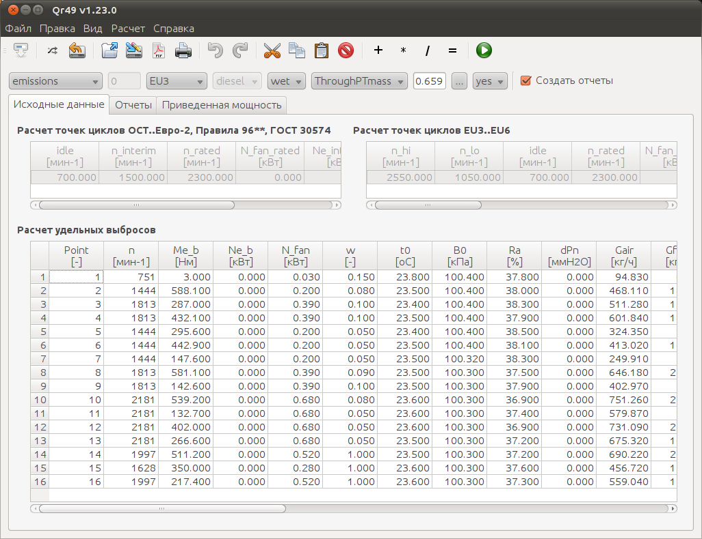

pa23
r49:
Страница проекта |
Старый сайт |
Загрузки
Программный комплекс r49 предназначен для расчета удельных выбросов вредных веществ (ВВ)
с отработавшими газами (ОГ) дизельных двигателей, испытываемых по стационарным циклам на
соответствие нормативам Евро-0..Евро-6 (Правила ЕЭК ООН №49 Ревизия 1 и Ревизия 4),
Правила ЕЭК ООН №96 Ревизия 1, ОСТ 37.001.234-81, ГОСТ 17.2.2.05-97, ГОСТ 30574-98 и ГОСТ Р 51249-99.
Возможности r49:
- расчет оборотов A, B и C для стационарных циклов Евро-3..Евро-6;
- расчет точек (частота вращения коленчатого вала двигателя, крутящий момент, потери мощности на привод вентилятора и т.д.) для 13-ти ступенчатого цикла Евро-0..Евро-2, 5-ти и 8-ми ступенчатых циклов, 13-ти ступенчатого цикла Евро-3..Евро-6, циклов C1, D1, D2, E1, E2, E3, E5, F, G1, G2, а также циклов по ОСТ 37.001.234-81 и ГОСТ 17.2.2.05-97;
- расчет удельных выбросов ВВ с ОГ дизелей по циклам: 13-ти ступенчатому Евро-0..Евро-2, 5-ти и 8-ми ступенчатому, 13-ти ступенчатому Евро-3..Евро-6, по циклам C1, D1, D2, E1, E2, E3, E5, F, G1, G2, по циклам согласно ОСТ 37.001.234-81 и ГОСТ 17.2.2.05-97. По результатам расчетов удельных выбросов ВВ создаются отчеты;
- расчет мощности двигателя, приведенной к нормальным атмосферным условиям (Правила ЕЭК ООН №85);
- расчет дымности отработавших газов по циклу ELR;
- "свободный" расчет удельных выбросов (напр., при снятии регулировочных характеристик, без привязки к точкам какого-либо цикла).
r49 также позволяет:
- ориентироваться на крутящий момент брутто или мощность брутто (по выбору) при расчете мощности двигателя нетто;
- использовать в расчете непосредственные замеры расхода воздуха или расчитывать его по значениям разрежения на измерительном сопле;
- использовать в расчете концентрации оксидов азота, замеренные как во влажном, так и в сухом состоянии;
- производить обратный расчет относительно оксидов азота, т.е. рассчитывать концентрации оксидов азота, исходя из значений удельных выбросов для каждой точки испытательного цикла;
- рассчитывать степень рециркуляции отработавших газов (РОГ), основываясь на замерах концентраций диоксида углерода в воздухе, поступающем в цилиндры двигателя, и в отработавших газах;
- рассчитывать удельные выбросы "твердых" частиц (ТЧ) по циклу, основываясь на массах осевших на фильтрах ТЧ, или по значениям дымности ОГ, представленной в 1/м, % или FSN;
- оценивать корректность замеров расхода воздуха двигателем, основываясь на замерах концентраций кислорода в ОГ.
Люди, внесшие вклад в проект ценными советами:
- Борис Романович Бланкштейн
- Евгений Константинович Шприц
- Александр Малютин
- Андрей Кукушкин
- Дмитрий Епанешников
Скриншоты:

strcnt:
Страница проекта |
Загрузки
Определение числа непустых строк в текстовых файлах.
Скриншоты:

github |
vkontakte |
facebook